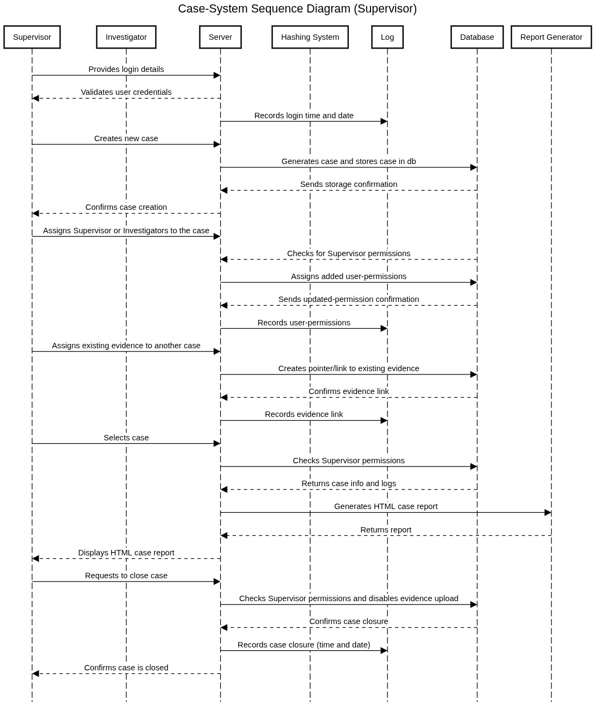
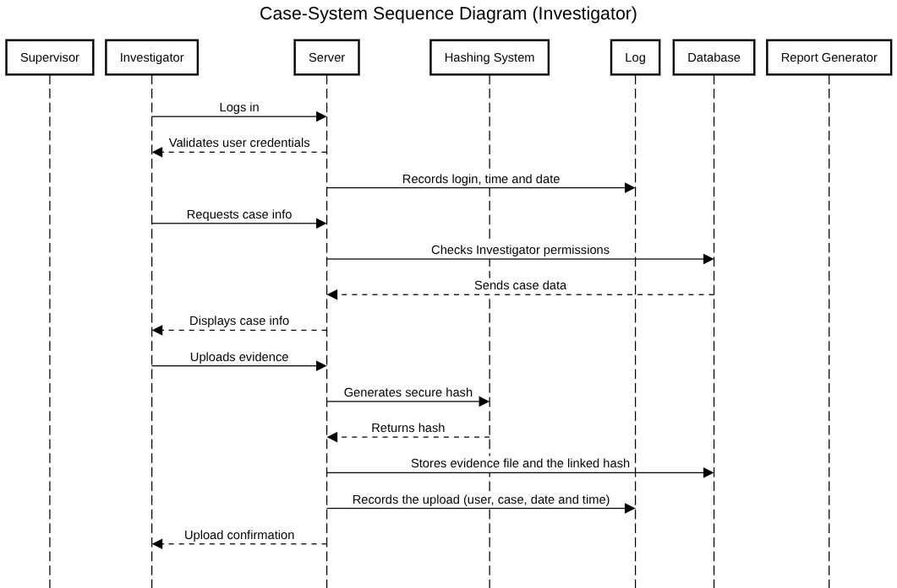

CoC System Documentation
CocSystem is a mini Chain of Custody (CoC) System designed for securely storing and managing digital evidence during a digital-forensic investigation.
This system allows Supervisors to create cases and assign investigators to collaborate within a secure and controlled enviroment.
To ensure the credibility of the investigation, every action is automatically logged.
Supervisors role
In this CoC system, the supervisor oversees and manages the cases and the investigators assigned to them. Supervisors have the authority to:
- Create cases
- Assign invesigators to cases
- Monitor progress of ongoing investigations
- Assign existing evidence to other cases
- Review case reports
- Close cases once they are finished
The role of supervisors is to ensure that all actions comply with procedural standards and maintain the integrity of the investigations.
Essentially, Supervisors are both coordinators and overseers in which they hold full permission to manage cases to ensuring the security,
transparency, and credibility of the digital forensic invesigation.

Investigator role
The investigator...
